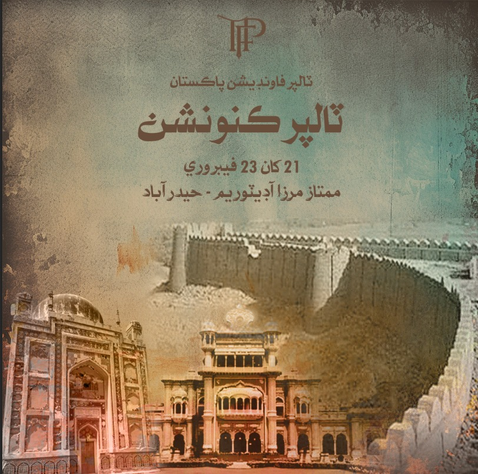

OUR BLOG

The Rise of Talpur Dynasty
Explore the fascinating history of how the Talpur Dynasty came to power in Sindh, shaping the region's cultural and political landscape...
Read moreCultural Contributions of Talpurs
Discover the rich cultural heritage and contributions of the Talpur Dynasty to Sindhi society, from art and architecture to literature and music...
Read moreLegacy of Talpur Rulers
Learn about the lasting impact and legacy of Talpur rulers on modern-day Sindh, exploring their influence on governance, education, and social structures...
Read more